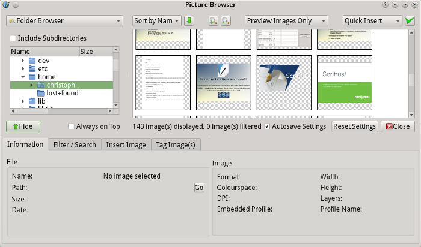
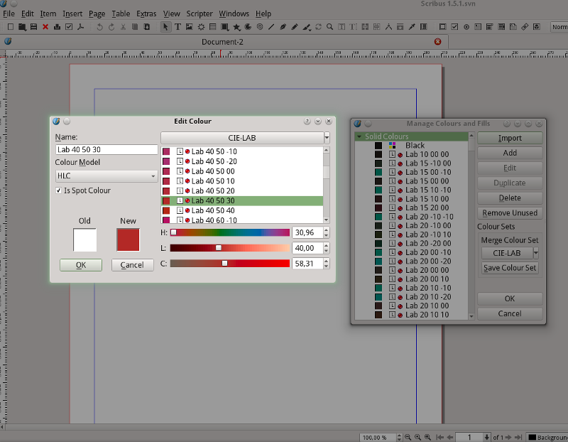
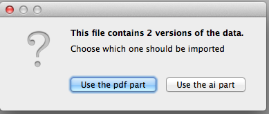

Was ist neu in Scribus 1.5.4?
Dies ist ein kurzer Überblick über die wichtigsten Änderungen in Scribus im Vergleich zur aktuell stabilen Version 1.4.x.
Beachten Sie bitte, daß sich das Dateiformat geändert hat und nicht abwärtskompatibel mit einer anderen stabilen Version (1.4.x oder früher) ist. Genauer gesagt, Sie werden 1.5.x-Dateien nicht mit 1.4.x oder früheren Versionen öffnen können.
Beachten Sie auch, daß die 1.5.x-Serie keine offiziell stabile Version ist. Alle 1.5.x-Versionen sind Entwicklungsversionen für das kommende offiziell stabile Scribus 1.6.0! Wenn Sie versuchen, wichtige Dokumente mit 1.5.x zu erstellen, so machen Sie dies auf eigene Gefahr! Das Scribus-Team ist dennoch sicher, daß Scribus 1.5.4 für mutige Anwender bereits stabil genug für die tägliche Arbeit ist. Funktionen, die schon in 1.4.x vorhanden sind, arbeiten genauso verläßlich und in vielen Fällen sogar besser als in 1.4.x.
 |
Ein neuer Look! |
Allgemein
- Qt 5: Ab Version 1.5.x wird Scribus mit der Version 5 des Qt-Toolkits kompiliert. Für Scribus 1.5.4 ist mindestens Qt 5.5 erforderlich.
- Mehr Abhängigkeiten: Scribus 1.5.x macht Gebrauch von mehr externen Bibliotheken als frühere Versionen, speziell für die Importfilter. In den meisten Fällen muß Scribus explizit mit diesen Bibliotheken kompiliert werden, so daß sie Abhängigkeiten werden. In anderen Fällen (z.B. UniConverter) erkennt Scribus eine installierte Version automatisch. Beachten Sie, daß die vollständige Unterstützung für manche Bibliotheken auf Mac OS X und Windows erst mit der Veröffentlichung von 1.6.0 zur Verfügung stehen wird.
Text und Typographie
Typographie
- Vertikales Ausrichten des Textes.
- Hurenkinder und Schusterjungen.
- Der Textlayout-Code wurde komplett neu geschrieben und unterstützt jetzt über 500 Sprachen und Schriftsysteme, darunter auch linksläufige wie Arabisch oder Hebräisch oder komplexe Schriften wie Devanagari.
- Unterstützung erweiterter OpenType-Funktionen.
Text
- Hintergrundfarben für Glyphen.
- Fuß- und Endnoten.
- Frei definierbare Textvariablen.
- Textreferenzen.
- Verankerte Textrahmen.
- Automatische Numerierung und Spiegelstriche.
- Automatisches Erstellen von Textverkettungen.
- Vertikales Ausrichten des Textes. Dies war eine der am meisten gewünschten Funktionen im Zusammenhang mit Scribus’ Textfunktionen. Der Text in einem Rahmen kann nun oben, mittig und unten ausgerichtet werden.
- Automatische Anpassung des Textrahmens an die Textgröße.
- Inline-Objekte in Textrahmen sind endlich vollständig bearbeitbar.
Tabellen
Das Tabellen–Werkzeug wurde komplett neu geschrieben. Tabellen in Scribus funktionieren jetzt mehr wie in anderen DTP– und Textverarbeitungsprogrammen. Es wurden auch rudimentäre Stile für Tabellen und Zellen eingeführt.
 |
Neue Tabellenfunktionen |
Grafiken
Bildbrowser
Grafikdateien können durch ein neues und leistungsfähiges Plug-in, den “Bildbrowser”, mit Hilfe von Grafiksammlungen oder Tags verwaltet werden. Auch können Grafikdateien einfach vom Bildbrowser in ein Scribus-Dokument gezogen werden.
|  |
Asset-Verwaltung mit dem Bildbrowser |
Vektorwerkzeuge
- Neue Vektortypen: Kreisbogen und Spiralen.
 |
Spiralen |
- Kalligraphiestift.
- Neue Pfadwerkzeuge: Abflachen und Glätten von Pfaden.
- Eine der meistgewünschten Funktionen – Schlagschatten – kam hinzu und funktioniert bei allen Exportformaten.
 |
Endlich: Schlagschatten! |
Rasterbilder
- Bildspeicher: Um zu vermeiden, daß Scribus beim Laden vieler hochauflösender Bilder langsam wird, wurde eine konfigurierbare Auslagerungsfunktion (Cache) für Rasterbilder implementiert.
- Eingebettete Bilder: Rasterbilder können jetzt in Scribusdateien eingebettet werden. Beachten Sie, daß gespeicherte SLA- oder sogar SLA.GZ-Dateien dadurch sehr groß werden können.
Rahmenfüllungen und -linien
|  |
L*a*b*- und HLC-Farben in Scribus |
- Unterstützung für CIE-L*a*b*- und CIE-HLC-Farbmodelle: Ab Version 1.5.1 unterstützt Scribus den CIE-L*a*b*-Farbraum und seine benutzerfreundliche Variante HLC in nahezu allen Farbdialogen. Man kann nun L*a*b*-Farben hinzufügen oder existierende Farben in diese umwandeln.
- Zugang zur über 300 Farbpaletten: Mit Hilfe des Ressourcen-Managers lassen sich mehr als 300 meist kommerzielle Farbpaletten im L*a*b*-Farbraum herunterladen.
 |
Einheitliche Verwaltung von Farben und Füllungen |
- Mehr unterstützte Farbpaletten-Formate: Scribus kann jetzt Paletten aus bzw. für Adobe Photoshop (ACO), AutoCAD (ACB) und Swatchbooker (SBZ) ebenso lesen und nutzen wie Adobe-Swatch-Exchange-Dateien (ASE).
- Mehr Farbverläufe: Scribus kann GIMP-Farbverläufe über den »Farben und Füllungen« Dialog importieren. Darüber hinaus bietet Scribus 1.5.x mehr Farbverlaufstypen, darunter auch in Scribus deutlich gewachsen und beinhaltet unter anderem Verlaufsgitter.
- Schraffuren: Ab dieser Version unterstützt Scribus echte Vektorschraffuren mit verschiedenen Optionen.
- Neue Linienoptionen: Alle Linien, inklusive der Rahmenlinien, können jetzt einen Farbverlauf oder ein Muster haben, statt nur einer Farbe.
- Erweiterte Transparenzeffekte: Transparenzeffekte, die bisher nur für Photoshop–Dateien mit mehreren Ebenen innerhalb eines Bildrahmens verfügbar waren, gibt es jetzt neben wie zusätzlichen Effekten mit dem neuen »Transparenz«-Reiter in der Eigenschaftenpalette für alle Rahmen und Ebenen.
Importfilter
Erhebliche Arbeit wurde in neue und die Verbesserung existierender Importfilter gesteckt.
Verbesserte Importfilter
- Adobe Illustrator: Der Adobe-Illustrator-Importer wurde komplett neu geschrieben. Bei AI-Hybrid-Dateien ist es jetzt möglich, entweder den PDF- oder den AI-Teil der Datei auszuwählen.
|  |
Der neu geschriebene AI-Importer |
- OpenDocument-Grafiken: Der ODG-Importer wurde komplett neu geschrieben und unterstützt jetzt auch OpenDocument-Presentation-Dateien (ODP).
- PDF: Der PDF-Importer wurde komplett neu geschrieben und öffnet nun die meisten PDF-Dateien mit 100% korrektem Layout. PDF-Formulare werden als solche erkannt und können in Scribus bearbeitet werden.
- PostScript: Der PostScript-Importer wurde komplett neu geschrieben und öffnet nun die meisten PS Dateien mit 100% korrektem Layout.
- OpenDocument Text (ODT): Der ODT-Importer wurde komplett neu geschrieben und ist jetzt wesentlich toleranter gegenüber ODT-Dateien, die mit anderen Programmen als LibreOffice und OpenOffice geschrieben wurden (z.B. MS Word, AbiWord). Er unterstützt auch mehr ODT-Funktionen.
Neue Importfilter
- Adobe PageMaker: Scribus 1.5 beinhaltet eine frühe Version eines Filters für Dateien, die mit den Versionen 6.5 und 7.0 des einst populären DTP Programms erstellt wurden. Er benutzt dazu libpagemaker.
- Color Exchange Format (CXF): CXF, Version 3 ist ein ISO-Standard, dessen Zweck es ist, die Farbkommunikation für verschiedene Ausgabeziele wie Web oder unterschiedliche Druckverfahren zu erleichtern. In einer CXF-datei können daher mehrere Versionen einer Farbpalette enthalten sein. Weil CXF auch für die Farbrezeptur verwendet wird, hat das Scribus-Team auch Unterstützung für Spektralfarben implementiert. Letztere werden beim import in den L*a*b*-Farbraum umgerechnet.
- Computer Graphics Metafile (CGM): CGM ist ein 2D-Vektorformat–Standard, den es schon lange gibt und der insbesondere für technische Zeichnungen immer noch weiterentwickelt wird. Der neue Filter sollte die meisten CGM Dateien korrekt importieren.
- CorelDraw (CDR, CDT, CMX): Dank der unermüdlichen Arbeit an libcdr, kann Scribus nun Dateien importieren, die von CorelDraw von der Version 1 bis zur Gegenwart erstellt wurden. Außerdem erlaubt die Integration von libcdr nicht nur das Importieren von CDR-Dateien, sondern auch CorelDraw-Templates- und CorelDraw-Presentations-Exchange-Dateien (CDT, CMX).
- Enhanced Metafile (EMF): EMF-Dateien sind 32-bit Versionen des 16-bit-Windows-Metafile-Formats (WMF), das schon von Scribus 1.4.x unterstützt wurde.
- GraphicsMagick Plug-in: Nahezu alle Bitmap-Formate, die von GraphicsMagick unterstützt werden, können nun von Scribus importiert werden. Zu beachten ist dabei, daß die vielen Formate im Auswahlmenü nicht einzeln aufgeführt werden, um Platz zu sparen.
- InDesign/InCopy: Während die Reverse-Engineering-Anstrengungen bezüglich InDesigns Binärformat (INDD) durch Entwickler von dritter Seite noch nichts wirklich Brauchbares erreicht haben, hat Adobe die komplette Spezifikation der XML Version des Formats (IDML) veröffentlicht. Scribus 1.5 kommt mit einem grundsätzlich funktionierenden, aber noch nicht optimalen Importfilter für dieses Format daher, der mit der Zeit verbessert und verfeinert werden wird. Er importiert auch InDesign XML Snippets (IDMS) und einige InCopy XML Dateien (ICML).
- iWorks Pages (PAGES): Pages ist Apples Textverarbeitungssoftware, die auch viele DTP Funktionen zur Verfügung stellt. Ein eigener Importfilter wurde entwickelt, um Dateien zu importieren, die mit Pages ’08 und späteren Versionen erstellt wurden.
- Krita (KRA): Das native Format des digitalen Zeichenprogrammes Krita.
- Macromedia FreeHand (FH*): Ein experimenteller Importfilter, der libfreehand nutzt, wurde hinzugefügt.
- Micrografx Draw (DRW): Dies ist ein Dateiformat der einst populären Micrografx Draw Grafiksoftware für Windows 3 und 95. Da es immer noch viele Vektorgrafiksammlungen gibt, die dieses Format nutzen, wurde ein Importfilter geschrieben.
- Microsoft Publisher (PUB): Ein Importer für PUB-Dateien wurde möglich durch die Nutzung von libmspub, das auch für den Publisher Import bei LibreOffice genutzt wird. Die Bibliothek sollte alle Publisher-Versionen unterstützen.
- Microsoft Visio (VSD, VXD): Der Importer für Visio-Dateien wurde ermöglicht durch libvisio, das auch für den Visio-Import bei LibreOffice genutzt wird. Zumindest alle Visio-Versionen von 2000 bis 2013 sollten importiert werden können.
- Microsoft Word XML (DOCX): MS Words XML-basiertes Dateiformat wurde zu einem neuen de-facto Standard für Textverarbeitungsdateien. Der neue Importfilter unterstützt zum mindesten DOCX Dateien, die mit Word 2010 oder später erstellt wurden.
- Open Raster File (ORA): Open Raster ist ein offener Standard für komplexe Bitmap Dateien. Es wird von allen größeren Freien Bildbearbeitungsprogrammen, inklusive GIMP und Krita, unterstützt.
- Photoshop Custom Shapes (CSH): CSH ist ein Vektorformat für einfache Vektorgrafiken in Adobe Photoshop. Es kann mit dem neuen Formen-Manager importiert werden.
- Progressive Graphics File (PGF): Dies ist ein ziemlich neues Format, das wie JPEG 2000 das JPEG-Format ersetzen soll, aber Geschwindigkeit und Qualität über die Komprimierung stellt.
- QuarkXPress (QXD): Hierbei handelt es sich um einen experimentellen Importfilter für Dateien, die mit QuarkXPress 3.x or 4.x erzeugt wurden. Er verwendet die Bibliothek libqxp, die auch für den XPress-Import in LibreOffice genutzt wird.
- Rich Text Format (RTF): Als eines der meistverbreiteten Austauschformate für formatierten Text ist RTF auch in DTP Arbeitsabläufen sehr gebräuchlich und kann von nahezu jedem Textverarbeitungsprogramm seit den 90er Jahren exportiert werden.
- StarView Metafile (SVM): Dies ist ein altes Metafile-Format (ähnlich wie WMF), das vom Vorgänger von OpenOffice / LibreOffice, StarOffice, genutzt wurde. Da beide Nachfolger SVM noch in OpenDocument Graphics nutzen, ist der SVM Importfilter ein Nebenprodukt des neuen ODG-Filters.
- UniConvertor-Plug-in: Wie beim GraphicsMagick-Plug-in listet Scribus keine Dateitypen auf, die von UniConverter unterstützt werden, um Platz im Auswahlmenü zu sparen. Scribus ignoriert UniConverter auch bei Dateitypen für die es eigene Importfilter zur Verfügung hat.
- WordPerfect Graphics (WPG): Scribus nutzt eine verbesserte Version von libwpg, um das Clipart-Format von WordPerfect Office zu importieren.
- VIVA Designer XML (XML): Wie InDesign ermöglicht VIVA Designer den Export von XML Versionen seines eigenen Formats. Diese können nun von Scribus importiert werden.
- Xara Designer (XAR): Xara Designer (früher bekannt als Xara Xtreme) ist bekannt als eines der mächtigsten Vektorzeichenprogramme. Das Dateiformat (XAR) ist gut dokumentiert, und dank der vielen Beiträge professioneller Xara-Nutzer war es dem Scribus-Team möglich, einen hervorragenden XAR Filter zu schreiben, dessen Implementierung Scribus viele neue Funktionen brachte.
- XML Paper Specification (XPS, OXPS): XPS ist eine Alternative zu PDF, die ursprünglich von Microsoft entwickelt wurde und nun von ECMA International gepflegt und aktualisiert wird. Scribus 1.5.x kann sowohl die ursprüngliche Microsoft-Version (XPS) als auch die modifizierten Versionen, die von ECMA genormt wurden, (OXPS) importieren.
- XPress Tags (XTG): XTG ist ein Format, das Quark ersonnen hat, um Textlayout zwischen Dokumenten zu übertragen. Scribus 1.5.x bietet einen Importfilter für XTG-Dateien, die von QuarkXpress geschrieben wurden, und der nahezu fehlerfrei arbeitet. Zu beachten ist, daß XPress Tags nicht mit Xtags identisch ist, die eine erweiterte Version von XPress Tags darstellen, die von dritter Seite mittels eines XPress-Plug-ins bereitgestellt wird.
- ZonerDraw (ZMF): Der Importfilter für ZMF-Dateien war dank der Bibliothek libzmf möglich, die auch LibreOffice für den Import verwendet. Momentan werden nur die Versionen 4 und 5 unterstützt.
PDF-Funktionen
- Unterstützung von PDF/X-4: PDF/X-4 ist, weil es Transparenzen erlaubt, ein erheblicher Fortschritt gegenüber PDF/X-3.
- Substantielle Verbesserung bei PDF-Formularen: Der Code für PDF-Formulare wurde komplett neu geschrieben, und Scribus unterstützt nun sämtliche Eigenschaften von PDF-Formularen, so wie sie in der PDF-Spezifikation festgelegt sind.
- Unterstützung von PDF-3D-Features mit Hilfe von OpenSceneGraph: Neuere Versionen der PDF-Spezifikation erlauben es, 3D-Objekte in PDF-Dateien einzubetten. Scribus 1.5.x führt ein neues PDF-Element namens »3D Anmerkung« ein. Es ermöglicht den Import von 3D-Elementen in vielen Formaten und bietet begrenzte Bearbeitungsmöglichkeiten wie Anzeigeart oder Beleuchtung.
- Schrifteinbettung: Der Code zur Schrifteinbettung wurde ebenso wie die zugehörige grafische Oberfläche komplett neu geschrieben.
 |
3D-Objekte in Scribus |
Andere Exportmöglichkeiten
- XPS: Ein elementarer XPS-Exporter wurde hinzugefügt.
Bedienbarkeit / Grafische Oberfläche
- Neues Icon-Set: Ab Version 1.5.1 nutzt Scribus neue und moderne Icons. Sie sind hauptsächlich in schwarz und nutzen Farben nur, wenn es unabdingbar ist ist.
- Andockbare Fenster: Alle Fenster können jetzt an die rechte oder linke Seite des Hauptfensters angedockt werden.
- Texteigenschaftenpalette: Die Eigeschaftenpalette war aufgrund der neu hinzugekommenen Textfunktionen nicht mehr zu benutzen. Als erster Scritt wurde daher der »Text«-Reiter in eine eigenständige Palette ausgegliedert.
- Kontextmenu: Das Kontextmenü wurde neu gestaltet und ist jetzt wesentlich kleiner.
 |
Das verkleinerte Kontextmenü. |
- Dokument einrichten / Allgemeine Einstellungen: Beide Einstellungsdialoge wurden von Grund auf neu geschrieben und bieten jetzt wesentlich mehr Optionen.
- Dateivorschau: Die Vorschau im Dateiauswahlmenü funktioniert bei allen Arten an Ausgabe-, DTP-, Vektor- und Bitmap-Dateien.
- Ansichtsmodus mit Tabs: Wenn mehr als ein Dokument geöffnet ist, kann man die Ansicht mit Tabs wälen, um schnelleren Zugriff auf ein bestimmtes Dokument zu haben.
- Symbole: Scribus 1.5.x führt eine großartige Zeitersparnis namens Symbole ein. Jedes Objekt kann in ein Symbol oder »Eltern»-Objekt umgewandelt werden. Alle Kopien oder »Kind«-Objekte des letzteren erben jede Änderung, die an diesem Symbol vorgenommen wird.
 |
Symbole in Scribus |
- Ausrichten: Objekte können nun an anderen Objekten ausgerichtet werden.
- »Kombinieren« von Objekten: Objekte zusammenführen, ohne sie zu gruppieren.
- »Ausrichten«: Der »Einrasten«-Modus für Objekte ist nun als Grundeinstellung aktiviert.
- Ebenen: Objekte können nunmehr über Ebenengrenzen hinaus ausgewählt werden.
- Dokument aktualisieren: Es ist nun möglich, die Ansicht des gesamten Dokuments mit einem einzelnen Menüeintrag zu aktualisieren.
- Dokumentenstruktur: Objekte können jetzt Im Dokumentstruktur-Dialog beliebig verschoben werden.
- Rückgängig / Wiederherstellen: Die Verlaufsgeschichte wurde komplett überholt und funktioniert nun für fast alle alle Aktionen.
- Ressourcenmanager: Der neu implementierte Ressourcen-Manager erlaubt nicht nur den Download von Ressourcen wie Wörterbüchern oder Schriften, sondern zeigt auch die entsprechende Lizenz an.
Online-Hilfe
Für die 1.5/1.6er Serie nutzt Scribus für das Online-Handbuch jetzt eine CSS-Datei, um das Erscheinungsbild des Textes zu kontrollieren und zu verbessern. Die Datei heißt manual.css und kann, wie viele Scribus-Optionen, nach Wunsch modifiziert werden. Falls vorhanden, benutzt sie die Schriftart Fontin für Überschriften. Dies ist eine frei verfügbare Schrift, die leicht zum System hinzugefügt werden kann.
Zu beachten ist, daß das Online-Handbuch vor der Veröffentlichung der stabilen 1.6.x-Serie nicht immer aktuell sein wird.
Verschiedenes
- Scribus folgt nun dem XDG-Standard für Konfigurationsdateien. Daher befindet das Verzeichnis der allgemeinen Einstellungsdateien jetzt nicht mehr unter
~/.scribus/, sondern unter ~/.config/scribus/.
- Einige neue und nützliche Scripte wurden hinzugefügt und bestehende aktualisiert.
Bekannte Probleme mit Scribus 1.5.x
- Die Funktionalität der Eigenschaftenpalette ist enorm gewachsen, und sie muß so schnell wie möglich auseinandergenommen werden.
- Der Aktionsverlauf könnte bei neuen Funktionen noch nicht zuverlässig funktionieren.
- Manche Scripts, die mit Scribus mitgeliefert wurden, funktionieren u.U. nicht.
- Einige Tabellenoptionen in der Eigenschaftenpalette funktionieren nicht.
- Einige Textfunktionen, die mit Numerierung zu tun haben (z.B. Fußnoten, Listen) funktionieren nicht richtig.